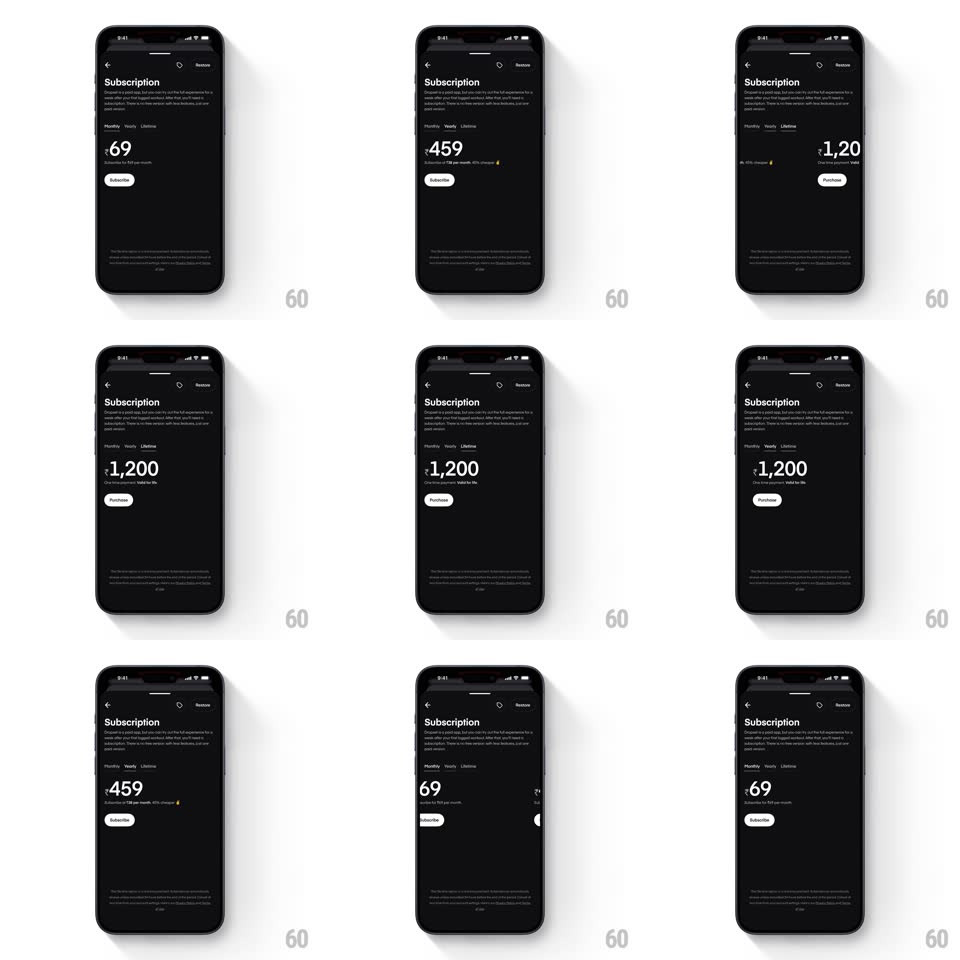

Media
Frame-by-frame

Rebuild this interaction 1:1: Dropset's subscription tab switch - Monthly / Yearly / Lifetime tabs at the top of a dark paywall, where the active pill indicator slides to the tapped tab and the pricing block below crossfades to the new plan.

Rebuild this interaction 1:1: Dropset's subscription tab switch - Monthly / Yearly / Lifetime tabs at the top of a dark paywall, where the active pill indicator slides to the tapped tab and the pricing block below crossfades to the new plan.
## Integration
Integration: stack-agnostic spec - springs given as stiffness/damping, timed motions as duration + curve; map every value to your framework and animation library of choice.
## Scene
Black paywall screen: back chevron and Restore, "Subscription" title with explainer copy, a 3-segment tab row (Monthly, Yearly, Lifetime), a large price ("₹69" monthly, "₹459" yearly, "₹1,200" lifetime) with per-period subline, a white Subscribe/Purchase pill, and fine legal print at the bottom.
## Motion spec
Pattern: segmented control with content crossfade, ~350ms per switch.
- Indicator: the active background pill slides horizontally to the tapped tab (300ms, ease-out), stretching slightly mid-travel (scaleX 1.15 at midpoint) before settling.
- Label: the active tab label flips to high-contrast (150ms) as the pill arrives.
- Content: the price block crossfades (250ms) with a subtle 6px rise on the incoming value; the per-period subline swaps with it.
- Button: the CTA label flips between Subscribe and Purchase (150ms fade) - Subscribe for recurring, Purchase for lifetime.
## Calibration
- The pill leads, content follows: indicator starts moving on touch-down, content swaps ~80ms later.
- Price digits change as a block - no per-digit rolling.
## Reduced motion
Indicator and content crossfade (200ms); no stretch.
## Don't miss
- The yearly tab shows its equivalent monthly rate and a savings callout in the subline.
- The legal footer stays fixed; only the price zone animates.